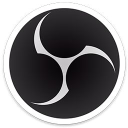
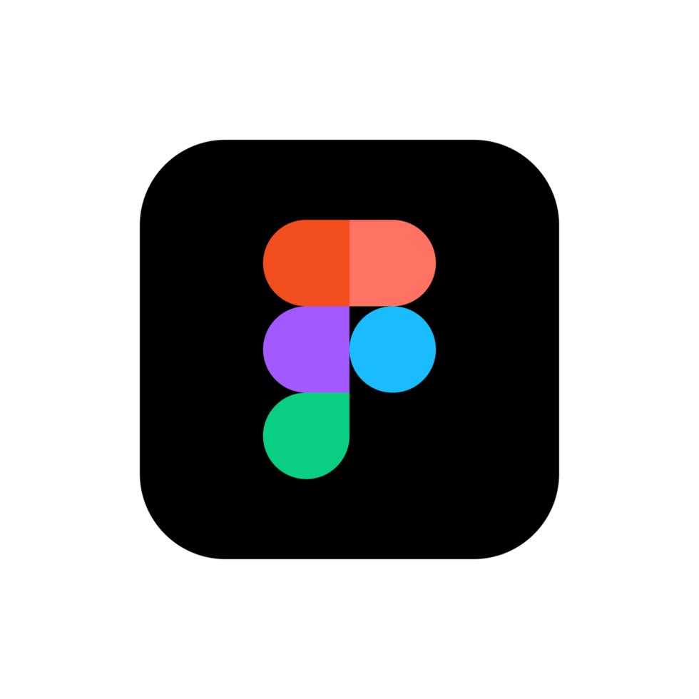
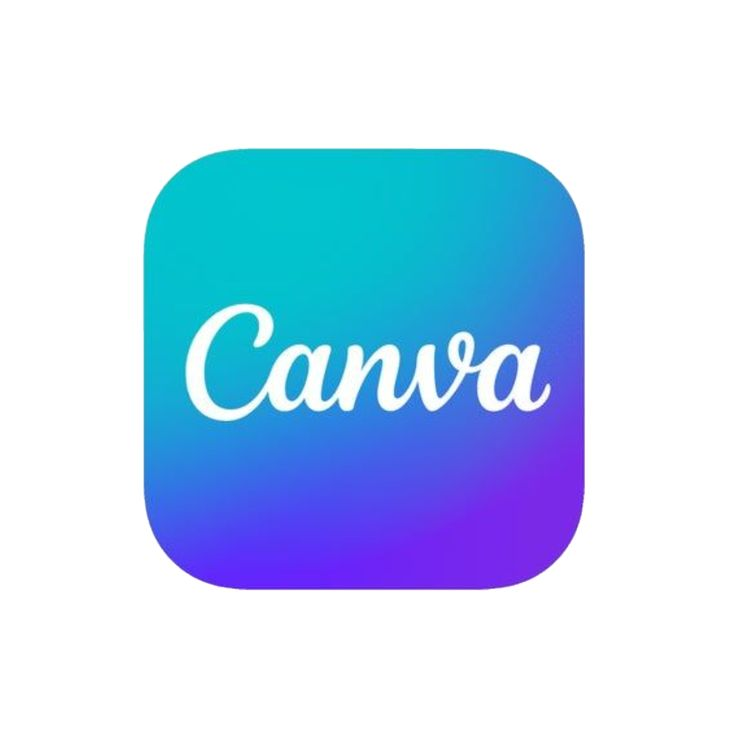
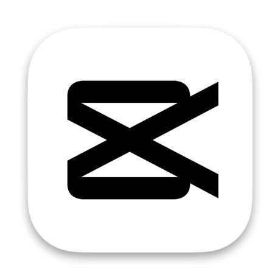
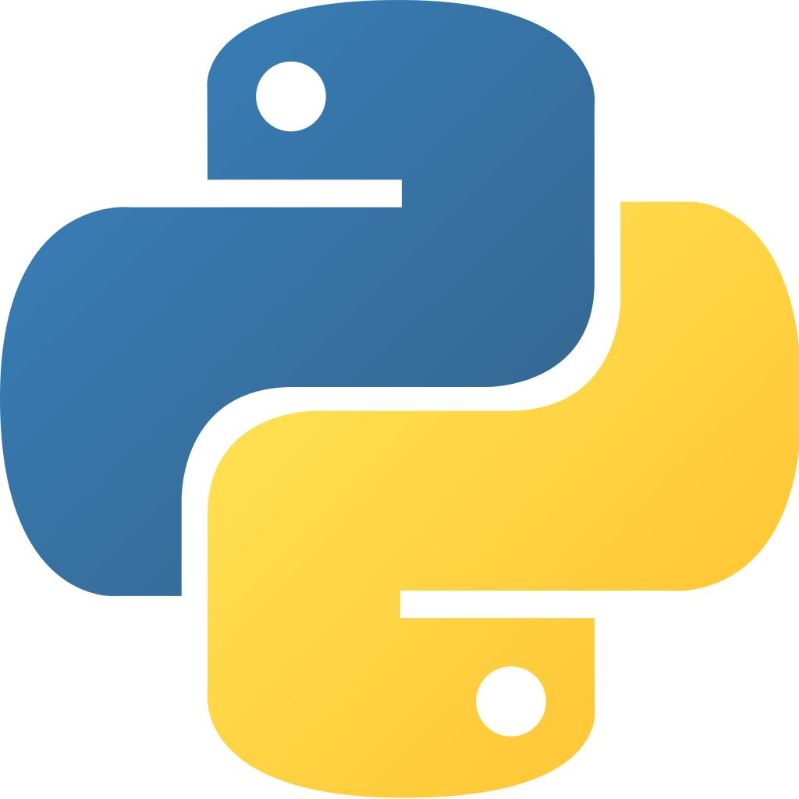

Relawan
Broadcaster OBS
Pelayanan Ibadah
Membantu pelayanan visual di gereja sebagai operator OBS (Open Broadcaster Software) untuk tayangan proyektor secara langsung.
Pelayanan Gereja
Data ScienceEvent ManagementMedia Production

Halo! Saya Vincent Berwyn C., mahasiswa aktif program studi S1 Sains Data di Telkom University Surabaya dengan IPK 3.94 dan lulusan jurusan IPA SMA Katolik Frateran (2024). Fokus utama saya adalah dunia data, yaitu mengolah, menganalisis, dan memvisualisasikan data agar menghasilkan insight yang bisa dipakai untuk mengambil keputusan. Saya terbiasa bekerja dengan Python dan memahami dasar statistika, analisis regresi, hingga machine learning.
Minat tersebut saya asah melalui sertifikasi Google Advanced Data Analytics, Google Data Analysis with Python, dan Google AI, kelas Machine Learning serta Visualisasi Data dari Dicoding, dan pelatihan AI dari Huawei ICT Academy. Saya juga menguji kemampuan di tingkat nasional, menjadi Semifinalis NSC Satria Data 2025 dan lolos ke Semifinal Tahap II NSC Satria Data 2026, serta ikut mengembangkan website sekolah dalam program pengabdian masyarakat yang tercatat sebagai Hak Cipta.
Di luar data, saya memiliki ketertarikan besar pada Event Management dan Media Production. Sejak sekolah menengah hingga perguruan tinggi saya aktif berorganisasi dan dipercaya memimpin divisi Broadcast serta Publikasi, Dekorasi, dan Dokumentasi (PDD) pada berbagai acara berskala besar. Pengalaman ini melatih saya bekerja dalam tim, merancang program kerja dan proposal, hingga memastikan operasional teknis di lapangan berjalan lancar.
Memadukan pemikiran analitis dari Sains Data dengan kreativitas di bidang produksi media membuat saya mampu melihat sebuah proyek dari berbagai sudut pandang. Saya selalu antusias untuk terus belajar, menghadapi tantangan baru, dan memberikan kontribusi terbaik di setiap kesempatan yang ada.
Pelayanan Ibadah
Membantu pelayanan visual di gereja sebagai operator OBS (Open Broadcaster Software) untuk tayangan proyektor secara langsung.
Pelayanan Gereja

Gereja Kelsapa
Bertugas sebagai pelayan altar untuk membantu kelancaran peribadatan di Gereja Kelahiran Santa Perawan Maria.
Pelayanan Gereja


Ketaqwaan Kepada Tuhan YME
Mengkoordinasi anggota untuk menyusun program kerja, membuat proposal kegiatan dan LPJ, serta mengeksekusi acara.
SMAK Frateran Surabaya


Latihan Dasar Kepemimpinan Siswa
Membantu koordinasi dan pelaksanaan LDKS untuk membekali jiwa kepemimpinan siswa-siswi SMA.
SMAK Frateran Surabaya

Reuni / Temu Kangen
Mengurus jalannya acara pertemuan alumni SMA Katolik Frateran Surabaya agar berjalan sukses.
SMAK Frateran Surabaya


LPK Pramuka 2023
Mengikuti Latihan Pengembangan Kepemimpinan (LPK) untuk mengasah jiwa kepemimpinan dalam organisasi kepramukaan.
Gerakan Pramuka

Gerakan Pramuka
Mengkoordinasi seluruh bagian organisasi agar bekerja sesuai jobdesc, memimpin rapat evaluasi, dan mengolah data administrasi.
Gudep Yos Sudarso-Dewi Sartika

Kepramukaan Aktual
Mengatur jadwal materi mingguan, mendelegasikan penanggung jawab, dan memastikan kegiatan pramuka rutin berjalan lancar.
SMAK Frateran Surabaya


Sains Data untuk Masyarakat
Berkontribusi dalam pembuatan dan pengembangan website sekolah untuk SDN 3 Wonokromo Surabaya.
SDN 3 Wonokromo Surabaya

Ramadhan Fest 2025
Merancang materi publikasi, dekorasi venue, serta handle visual broadcast selama acara Ramadhan berlangsung.
HIMA SAINS DATA

BARAYA 2025
Memimpin divisi PDD, mengawasi visual branding, dekorasi acara, dan koordinasi tim pendokumentasian.
HIMA SAINS DATA


Fit n Fun 2025
Bertanggung jawab atas desain publikasi, pengambilan foto dokumentasi, dan penataan dekorasi kegiatan olahraga kampus.
HIMA SAINS DATA


HOK Campus Attack
Menangani teknis live streaming dan broadcasting untuk turnamen Esport kampus yang diselenggarakan oleh UKM.
UKM Telkom Esport

TUS CUP 2025
Berperan sebagai panitia dalam mempersiapkan dan menyukseskan acara Telkom University Surabaya Cup.
Telkom University Surabaya


Angkatan 24/25
Mengelola sosial media, membuat konten grafis/video, dan merencanakan strategi promosi UKM (DVO).
UKM Telkom Esport

Welcome Party 2025
Membantu mempersiapkan aset visual dan dokumentasi untuk menyambut mahasiswa baru.
Telkom University Surabaya
Kepengurusan Himpunan
Berperan aktif dalam berbagai program kerja himpunan mahasiswa program studi Sains Data.
HIMA SAINS DATA





Prestasi Akademik
Penghargaan Indeks Prestasi Semester terbaik di Program Studi S1 Sains Data, Telkom University Surabaya.
Lolos ke Semifinal Tahap II National Statistics Competition (NSC), Statistika Ria dan Festival Sains Data.
Lolos seleksi CBT National Statistics Competition (NSC) ke babak Semifinal Tahap I.
Kompetisi Infografis pada Kentingan Journalism Week 2026.
Surat Pencatatan Ciptaan (Program Komputer) hasil Pengabdian Masyarakat, No. EC002026100951.